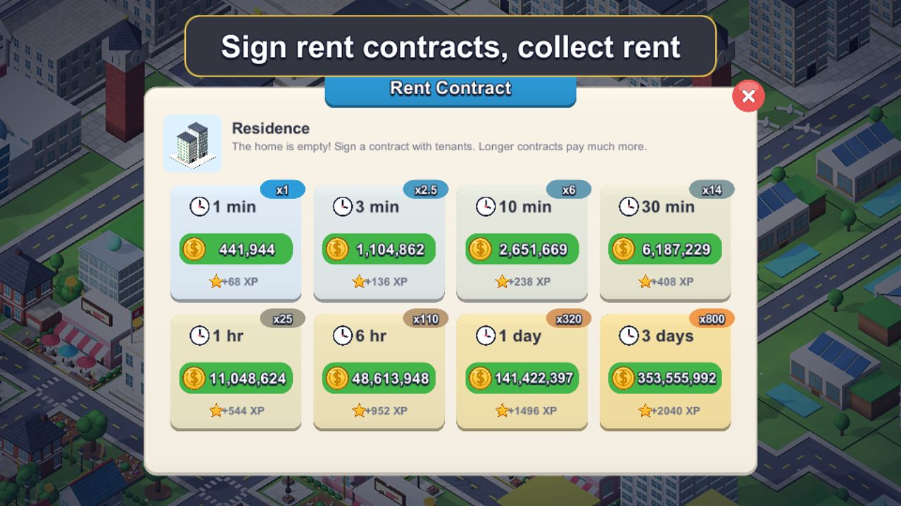
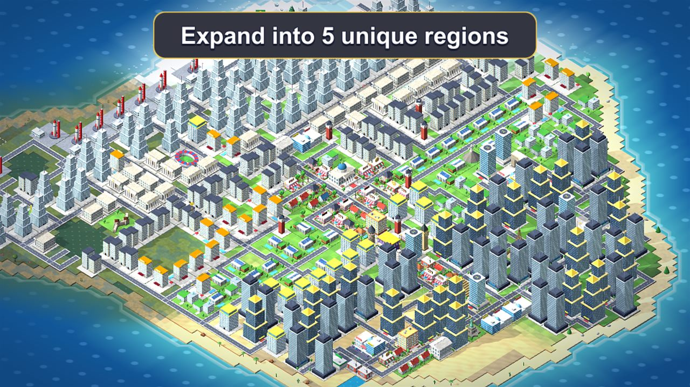

Around 2010, social city builders on Facebook such as Millionaire City, CityVille and SimCity Social were played by millions of people. You built a town, collected coins from your houses, expanded your land and decorated every corner. Many of those games are no longer available, but the feeling they gave is easy to remember. Money City is a new, original game made for players who miss that style of play.
Simple building, a satisfying moment every time you collected money, and a city that slowly grew from a few houses into a skyline. You could play for two minutes or for an evening, and there was always something to come back to.
How Money City brings it back
Money City is a cozy city builder and tycoon game for Android. You build homes, sign rent contracts from 1 minute to 3 days, collect rent with a tap and grow a small village into a megalopolis. You buy new land across an island with five regions, upgrade buildings to 5 stars, decorate with parks and statues and build 10 world wonders that boost your income.
What is different today
Money City is single-player and works offline. You don't need a Facebook account, friends to send requests or an internet connection. Ads are optional: you watch one only when you want a bonus. The game is available in 12 languages and starts in your phone's language.

Sign rent contracts, collect rentBuild 10 world wonders

Expand into 5 unique regions
Frequently asked questions
Is Money City related to Millionaire City, CityVille or SimCity Social?
No. Money City is an original game made by an independent developer. It is not affiliated with, endorsed by or connected to those games or their owners.
Is Money City similar to the classic Facebook city builders?
It shares the same relaxing idea of building a city and collecting rent from your buildings, with modern mobile features like offline play, rent contracts, five regions and world wonders.
Do I need Facebook or friends to play Money City?
No. Money City is a single-player game. You can play alone and offline.
Where can I play Money City?
Money City is available for Android on Google Play.
Millionaire City, CityVille and SimCity Social are trademarks of their respective owners. They are mentioned only to describe a style of game. Money City is not affiliated with or endorsed by these games or their owners.